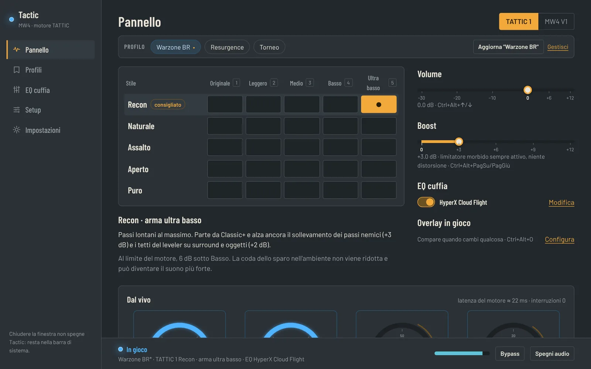

App Windows · gratis · open source
Senti tutto.
Prima di tutti.
Motore audio a 16 canali per Warzone e MW4: passi nemici in primo piano, il tuo sparo sotto controllo, EQ calibrato sulle tue cuffie. Un'app sola, setup guidato in cinque passi.
Windows 10/11 64-bit · installer diretto · v—
L'app
Tutto in una finestra.

Funzioni
Pensata per chi gioca competitivo.
Passi in primo piano
Il motore separa passi, spari e ambiente e alza quello che serve. Lo stile Recon spinge i passi lontani.
Il tuo sparo sotto controllo
Cinque livelli per la tua arma, da Originale a Ultra basso, anche da tastiera in partita.
EQ sulle tue cuffie
68 EQ pronti e la ricerca su 6.797 misure: trovi il tuo modello e lo calibri in un clic.
Setup guidato
Installa il cavo virtuale, configura Windows e verifica i 16 canali. A ogni avvio ricontrolla e ripara da solo.
Profili
Preset, volume, boost, EQ e cuffie salvati con un nome. Si cambiano con Ctrl+Alt+P senza uscire dal gioco.
Overlay e tasti rapidi
Pannello trasparente sopra il gioco e tasti Ctrl+Alt per arma, stile, volume e boost fino a +12 dB senza distorsione.
Niente Voicemeeter, niente Equalizer APO: il mixer e il motore sono dentro l'app. Discord e browser vanno dritti alle cuffie.
Installazione
Da zero alla partita in cinque minuti.
Scarica e installa
Il pulsante Scarica per Windows scarica direttamente
Tactic-setup.exe. Se Windows mostra "PC protetto": Ulteriori informazioni → Esegui comunque.Segui il setup
Al primo avvio parte il setup guidato: installa VB-CABLE (gratuito) dal sito ufficiale, propone il riavvio se serve e riprende da solo.
Configura con un clic
Scegli le cuffie e premi Configura tutto: cavo a 16 canali e 48 kHz, cuffie pulite, nessun abbassamento durante le chiamate.
Imposta il gioco
In Warzone: Audio → Dispositivo audio del gioco su CABLE Input, modalità cuffie avanzata spenta. L'app ti conferma quando il segnale arriva.
Scegli e salva
Parti da TATTIC 1 · Recon, scegli il livello della tua arma, poi salva tutto in un profilo.
Serve
Windows 10/11 64-bit · cuffie qualsiasi · VB-CABLE (lo installa l'app)
Non serve
Voicemeeter · Equalizer APO · scheda audio dedicata · account
FAQ
Prima di scaricare.
È gratis?
Sì, gratis e open source, senza account. VB-CABLE è donationware di VB-Audio: l'app lo scarica dal loro sito ufficiale.
Tocca il gioco?
No. Non modifica file del gioco, non inietta codice e non legge la memoria: lavora solo sull'audio che Windows riceve, come un mixer. Le regole del gioco restano di Activision.
Funziona con le mie cuffie?
Sì, con qualsiasi cuffia stereo. Il suono 3D lo crea il motore; l'EQ corregge la risposta del tuo modello.
Devo riavviare il PC?
Solo se Windows lo richiede dopo l'installazione del cavo virtuale. L'app te lo propone e dopo il riavvio riprende il setup da dove era.
L'overlay funziona in schermo intero?
Con il gioco in schermo intero senza bordi. I tasti Ctrl+Alt funzionano sempre.
Come si aggiorna?
Da Impostazioni → Aggiornamenti: la libreria dei preset si aggiorna nell'app, la nuova versione dell'app si scarica da qui.
Non sento il gioco, cosa controllo?
Apri Setup: ogni passo mostra cosa manca. Di solito è il dispositivo audio del gioco, che deve essere CABLE Input.
Pronto in cinque minuti.
Scarica BOOST TATTICWindows 10/11 64-bit · tutte le versioni · codice su GitHub